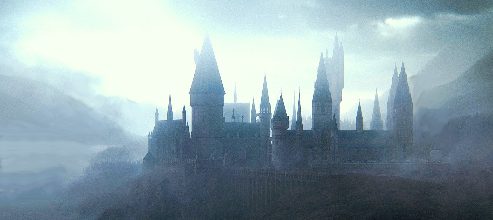

Hogwarts Castle
Hogwarts Castle was a large, seven-storey high building supported by magic, with a hundred and forty two staircases throughout its many towers and turrets and very deep dungeons.
The castle was built in the late Early Middle Ages (c. 993) by a wizard architect and the four most celebrated wizards of the age:
Godric Gryffindor, Helga Hufflepuff, Rowena Ravenclaw and Salazar Slytherin.
The castle was the main building of Hogwarts School of Witchcraft and Wizardry, regarded as the finest wizarding school in the world.
HOGWARTS MAP
HOGWARTS CASTLE

HOGWARTS CASTLE
About me
My name is William Hökegård and I'm currently
studying at Teknikhögskolan in Gothenburg as a full stack java developer.